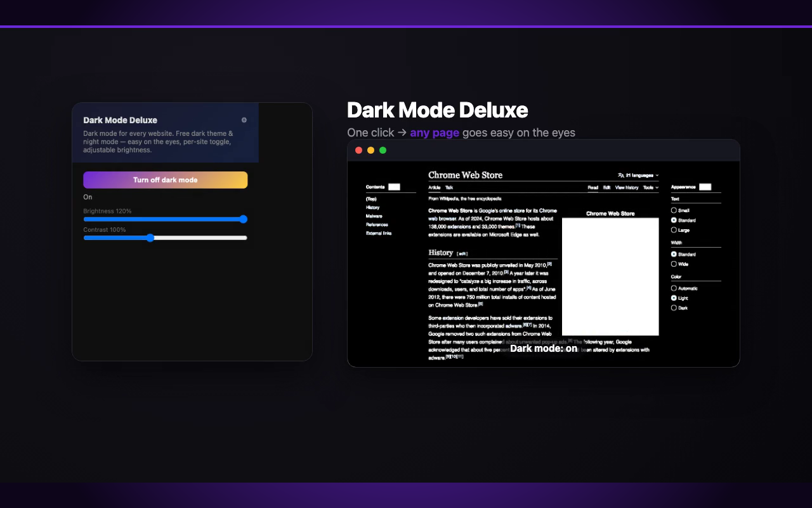
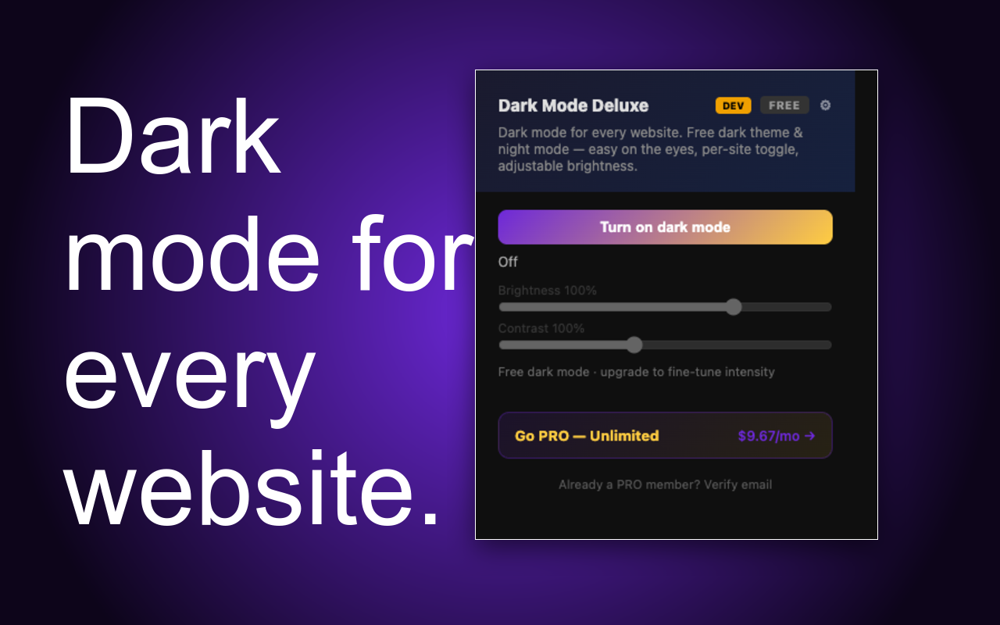
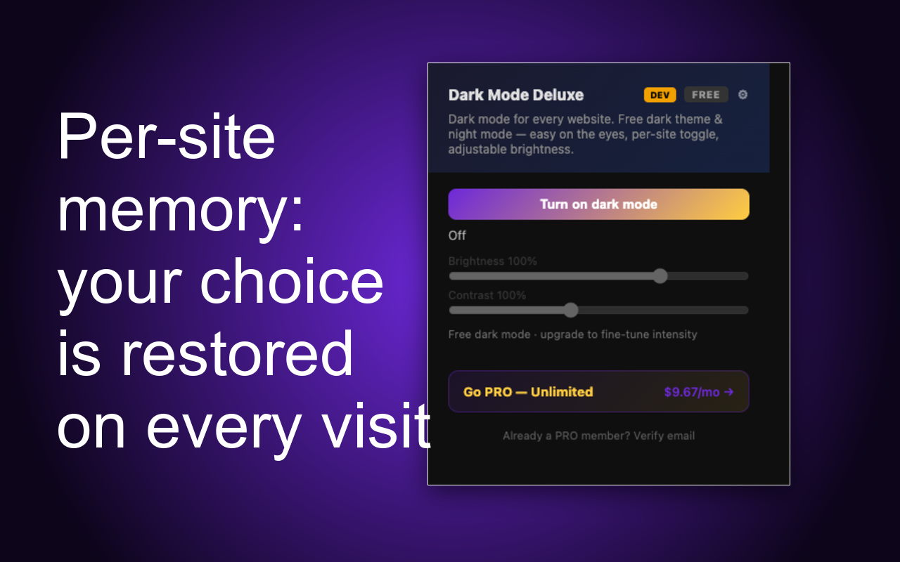
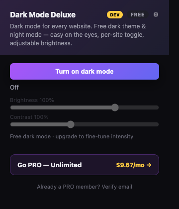

You flinch, dim the screen, keep reading anyway — and your eyes ache by the time you close the laptop. Half the web still has no dark theme. Give every page one.
Add to Chrome — Free



It applies to any page you turn it on for, with brightness/contrast you can adjust per site.
No. It only applies a local CSS filter; your per-site choice is stored locally.